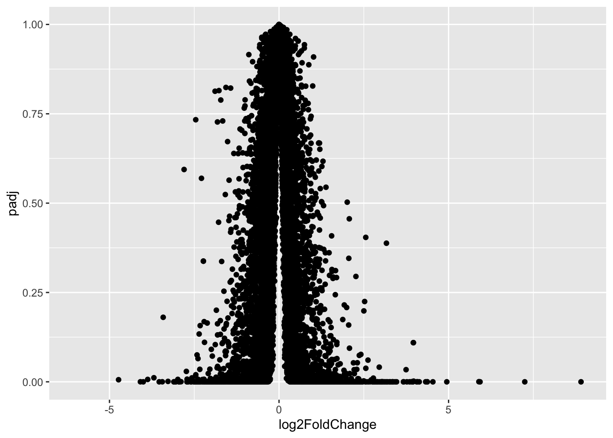
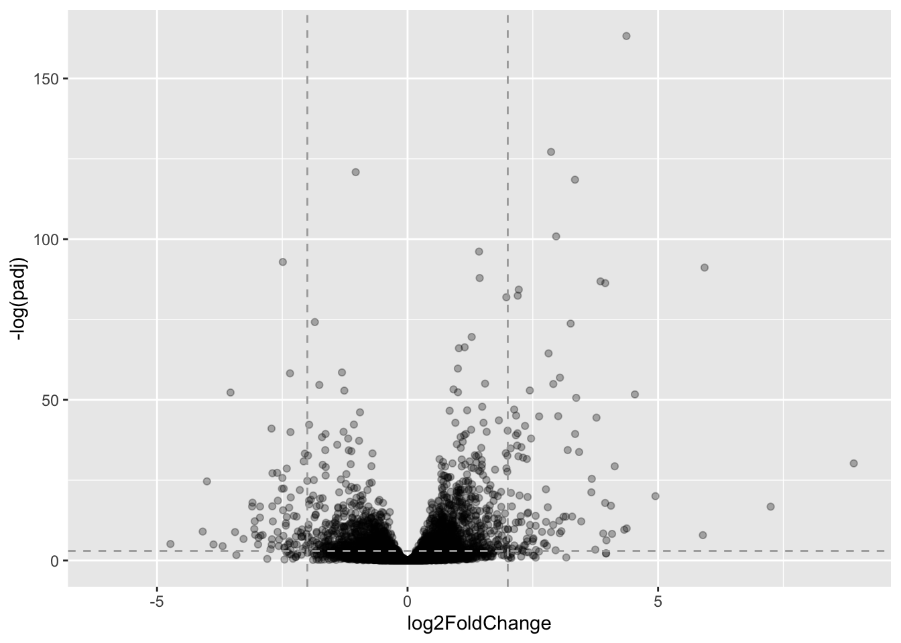

Welcome to Bioconductor
Vignettes contain introductory material; view with
'browseVignettes()'. To cite Bioconductor, see
'citation("Biobase")', and for packages 'citation("pkgname")'.
Attaching package: 'Biobase'
The following object is masked from 'package:MatrixGenerics':
rowMedians
The following objects are masked from 'package:matrixStats':
anyMissing, rowMedians
zero.vals <-which(meancounts[,1:2]==0, arr.ind=TRUE) #which applies a boolean to each value in a list to see# which rows satisfy the conditionto.rm <-unique(zero.vals[,1]) #returns a vector of unique valuesmycounts <- meancounts[-to.rm,]head(mycounts)
Q7. The purpose of arr.ind in the which() function is to return the row and column indices for where there are the boolean true values, this would be necessary to avoid extracting zero values, which we want to avoid. Calling unique will then make sure there is no redundancy in counting of identical row samples.
Q8. There are 250 up-regulated genes greater than 2-fc level
sum(up.ind)
[1] 250
Q9. There are 367 down-regulated genes.
sum(down.ind)
[1] 367
Q10. No, these results should not be trusted. The analysis only considers fold change magnitude, but a large fold change by itsself doesn’t tell us whether the difference is statistically significant. We have no p-values here, so we have no way of knowing if these expression differences are statistically significant. We need a proper statistical processing with DESeq before drawing any real conclusions about differential expression.
Setting up for DESeq
library(DESeq2)citation("DESeq2")
To cite package 'DESeq2' in publications use:
Love, M.I., Huber, W., Anders, S. Moderated estimation of fold change
and dispersion for RNA-seq data with DESeq2 Genome Biology 15(12):550
(2014)
A BibTeX entry for LaTeX users is
@Article{,
title = {Moderated estimation of fold change and dispersion for RNA-seq data with DESeq2},
author = {Michael I. Love and Wolfgang Huber and Simon Anders},
year = {2014},
journal = {Genome Biology},
doi = {10.1186/s13059-014-0550-8},
volume = {15},
issue = {12},
pages = {550},
}
dds <-DESeqDataSetFromMatrix(countData=counts, #runs a DESeq dataset analysiscolData=metadata, design=~dex)
converting counts to integer mode
Warning in DESeqDataSet(se, design = design, ignoreRank): some variables in
design formula are characters, converting to factors
#countData are gene counts across different experiments#colData is our metadata about those count columns
dds <-DESeq(dds)
estimating size factors
estimating dispersions
gene-wise dispersion estimates
mean-dispersion relationship
final dispersion estimates
fitting model and testing
res <-results(dds) #results of the DESeq analysishead(res)
log2 fold change (MLE): dex treated vs control
Wald test p-value: dex treated vs control
DataFrame with 6 rows and 6 columns
baseMean log2FoldChange lfcSE stat pvalue
<numeric> <numeric> <numeric> <numeric> <numeric>
ENSG00000000003 747.194195 -0.350703 0.168242 -2.084514 0.0371134
ENSG00000000005 0.000000 NA NA NA NA
ENSG00000000419 520.134160 0.206107 0.101042 2.039828 0.0413675
ENSG00000000457 322.664844 0.024527 0.145134 0.168996 0.8658000
ENSG00000000460 87.682625 -0.147143 0.256995 -0.572550 0.5669497
ENSG00000000938 0.319167 -1.732289 3.493601 -0.495846 0.6200029
padj
<numeric>
ENSG00000000003 0.163017
ENSG00000000005 NA
ENSG00000000419 0.175937
ENSG00000000457 0.961682
ENSG00000000460 0.815805
ENSG00000000938 NA
Volcano Plot
library(ggplot2)ggplot(res) +aes(x = log2FoldChange, y = padj) +geom_point()
Warning: Removed 23549 rows containing missing values or values outside the scale range
(`geom_point()`).

That plot is not very useful because we do not care about plots with extremely high p-values
library(ggplot2)ggplot(res) +aes(x = log2FoldChange, y =-log(padj)) +#log2FoldChange applies a logarithm sacle to a variablegeom_point(alpha =0.3) +geom_hline(yintercept=-log(0.05), col ="darkgray", linetype="dashed") +#vline and hline allow the addition#of a horizontal and vertical line in order to show critical cutoff valuesgeom_vline(xintercept=c(-2,2), col="darkgray", linetype="dashed")
Warning: Removed 23549 rows containing missing values or values outside the scale range
(`geom_point()`).

Annotations DBI
Q11. Completing the code below, adding “GENENAME” and “ENTREZID” and “UNIPROT”
library("AnnotationDbi")
Attaching package: 'AnnotationDbi'
The following object is masked from 'package:dplyr':
select
'select()' returned 1:many mapping between keys and columns
head(res, 10)
log2 fold change (MLE): dex treated vs control
Wald test p-value: dex treated vs control
DataFrame with 10 rows and 9 columns
baseMean log2FoldChange lfcSE stat pvalue
<numeric> <numeric> <numeric> <numeric> <numeric>
ENSG00000000003 747.194195 -0.350703 0.168242 -2.084514 0.0371134
ENSG00000000005 0.000000 NA NA NA NA
ENSG00000000419 520.134160 0.206107 0.101042 2.039828 0.0413675
ENSG00000000457 322.664844 0.024527 0.145134 0.168996 0.8658000
ENSG00000000460 87.682625 -0.147143 0.256995 -0.572550 0.5669497
ENSG00000000938 0.319167 -1.732289 3.493601 -0.495846 0.6200029
ENSG00000000971 5760.148362 0.459282 0.234318 1.960081 0.0499864
ENSG00000001036 2025.391794 -0.228244 0.124999 -1.825965 0.0678555
ENSG00000001084 652.173308 -0.253031 0.202576 -1.249064 0.2116417
ENSG00000001167 411.684395 -0.533733 0.228792 -2.332831 0.0196570
padj entrez uniprot genename
<numeric> <character> <character> <character>
ENSG00000000003 0.163017 7105 A0A087WYV6 tetraspanin 6
ENSG00000000005 NA 64102 Q9H2S6 tenomodulin
ENSG00000000419 0.175937 8813 H0Y368 dolichyl-phosphate m..
ENSG00000000457 0.961682 57147 X6RHX1 SCY1 like pseudokina..
ENSG00000000460 0.815805 55732 A6NFP1 FIGNL1 interacting r..
ENSG00000000938 NA 2268 B7Z6W7 FGR proto-oncogene, ..
ENSG00000000971 0.200967 3075 A5PL14 complement factor H
ENSG00000001036 0.246740 2519 E9PEB6 alpha-L-fucosidase 2
ENSG00000001084 0.495029 2729 A0A2R8YEL6 glutamate-cysteine l..
ENSG00000001167 0.105242 4800 P23511 nuclear transcriptio..
Pathway Analysis
library(pathview)
##############################################################################
Pathview is an open source software package distributed under GNU General
Public License version 3 (GPLv3). Details of GPLv3 is available at
http://www.gnu.org/licenses/gpl-3.0.html. Particullary, users are required to
formally cite the original Pathview paper (not just mention it) in publications
or products. For details, do citation("pathview") within R.
The pathview downloads and uses KEGG data. Non-academic uses may require a KEGG
license agreement (details at http://www.kegg.jp/kegg/legal.html).
##############################################################################
library(gage)
library(gageData)data(kegg.sets.hs)# Examine the first 2 pathways in this kegg set for humanshead(kegg.sets.hs, 2)